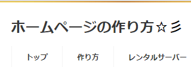
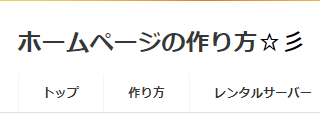
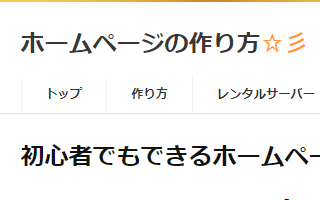

CSSで記号や文字を表示する「:before」と「:after」
HTML内で記号や文字などを記述したくない場合、「:before」と「:after」を使えば、CSSで記号や文字を表示させることができます。
要素の前に表示させる場合は「:before」を指定します。
要素:before {content:"記号や文字";}
一方、後に表示させる場合は「:after」を指定します。
要素:after {content:"記号や文字";}
例えば、当サイトのタイトルは以下のようになっています。
<h1>ホームページの作り方</h1>
このタイトルの「後」に「☆彡」マークを表示させたい場合、通常はHTML内で以下のようにそのまま記述すれば、特に問題なくそのまま表示されます。
■HTMLに直接記述する場合
<h1>ホームページの作り方☆彡</h1>
【実際の表示】

けれども、この「☆彡」マークは記号のため、検索エンジンはこのキラキラしたニュアンスを理解できません。そのようなSEO対策などの理由で、h1などの重要な箇所には記号を使いづらい場合、「:before」や「:after」を使ってCSSの方で指定することができます。
■CSSに記述する場合
<h1>ホームページの作り方</h1>
h1:after {content:"☆彡";}
【実際の表示】

このように、HTMLに直接記述した場合と全く同じように表示されます。
さらに、色や太さなども指定した場合は以下のようになります。
h1:after {
content:"☆彡";
color:#F90;
font-weight:bold;
}
【実際の表示】

この「:before」や「:after」については、同一ページで何度も繰り返し使用する記号について、あらかじめCSSで指定しておく使い方をすると便利です。
例えば、当サイトでは見出しの先頭部分でワンポイント的に「■」の記号を使用していますが、このような記号については「:before」や「:after」を使い、あらかじめCSSで指定しておくとよいでしょう。
「:before」や「:after」による検索エンジン対策への影響
注意したい点は、この「:before」や「:after」は記号以外に文字もCSSで表示させることができるため、HTMLに記述しているコンテンツとまったく別の内容を表示させることも可能になる点です。
例えば、以下のように記述すれば、HTML上では空白で何も記述されないのに対し、実際のサイト上では文字列が表示されてしまうことになります。
<h1></h1>
h1:after {content:"ホームページの作り方☆彡";}
もしやろうと思えば、HTML上の全ての文字列をCSSで記述することもできるはずです。結果として、「検索エンジン」と「サイト訪問者」に違うコンテンツを表示させてしまう可能性があり、このような使い方は検索エンジンに悪影響が出てしまう可能性も否定できません。
ただし、隠しテキストによるキーワードの埋め込みではないため、普通に使用している限り、検索エンジンスパムになる可能性はほぼないと感じています。実際、当サイトでも「:before」や「:after」は多用してますが、検索エンジンへの悪影響を感じたことは一度もありません。
普通に使用している限り、SEO対策への影響は全く問題ないと言えるでしょう。